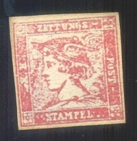
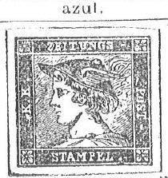

Torres' stamp catalogue: Livorno Plácido Ramón de TORRES CATALOGO PREZZO CORRENTE DI TUTTI FRANCO-BOLLI CREATI DAL 1840 AL 1874
Rosendo Fernandez
Return To Catalogue - Torres (Placido Ramon de) forgeries of the Italian States
Note: on my website many of the
pictures can not be seen! They are of course present in the
catalogue;
contact me if you want to purchase the catalogue.
Stamp dealer and forger of Barcelona (Spain). He collaborated with Miguel Rodriguez Sanchez (see for more information the book 'Philatelic Forgers, their Lives and Works' by V.E.Tyler). He also lived for some period in Livorno (Via Maggi N.2), where he apparently collaborated with Giulio Cesare Bonasi (who was apparently closely related to the stamp forger E.UC.Usigli).
Torres' stamp catalogue: Livorno Plácido Ramón de TORRES
CATALOGO PREZZO CORRENTE DI TUTTI FRANCO-BOLLI CREATI DAL 1840 AL
1874
According to Gerhard Lang, de Torres was born in Estepona, Malaga in 1847.

Bogus issues of Andorra, made by Torres

These stamps were used on letters from the Spanish soldiers in Morocco. However, they were not issued officially, but came from a private source (the forgers Placido Ramon de Torres and Miguel Rodriguez Sanchez and a a post office employee, Grabriel Jumanez). These speculators distributed their stamps among the soldiers, who then pasted them on their letters. So genuinely used bogus stamps exist! At the same time they sold a large number of these stamps to stamp dealers. There are 53 different stamps with different names of the regiments. All three people were arrested in April 1894. (sources: 'Les timbres de phantaisie' of Georges Chapier, in french and 'Philatelic Forgers, their lives and works' by Varro E. Tyler).


Possibly Torres forgeries of the first issues of Spain.


Genuine stamp of Spain from 1853 and a forgery with scratch in
the leaves in the lower left part (there are many other
differences). A similar image can be found in the catalogue of
Placido Ramon de Torres "Album Illustrado para Sellos de
Correo" of 1879 on page 9.
In Le Timbre Poste No 376 (1893), page 43, it is mentioned that Torres was also involved in some bogus stamps of Catane (Catania?) in 1874 (I have never seen this stamp).
Books issued by Torres (from http://www.filateliadigital.com/uploads/catalogos_esp.pdf):
Livorno/Madrid, Plácido Ramón de TORRES CATALOGO PREZZO CORRENTE DI TUTTI FRANCO-BOLLI CREATI DAL 1840 AL 1874 (can be downloaded from Google).
Barcelona, Plácido Ramón de TORRES: ALBUM ILUSTRADO PARA LOS SELLOS DE CORREO CONTENIENDO LA DESCRIPCIÓN Y PRECIO DE TODOS LOS SELLOS EMITIDOS DESDE 1840 Á 1879.
For Torres (Placido Ramon de) forgeries of the Italian States, click here.





Austrian offices in Turkey, 1867 issue genuine stamp and forgery
with printed perforation. This forgery is identical to the image
provided in the John Edward Gray 'The Illustrated Catalogue of
Postage Stamps' of 1870 (page 6). The catalogue of Placido Ramon de Torres "Album
Illustrado para Sellos de Correo" of 1879 also has the same
image on page 47.


Bolivia first issue 5 c genuine stamp and a forgery of this
stamp. The 5 c forgery is almost identical to the image provided
in the John Edward Gray 'The Illustrated Catalogue of Postage
Stamps' of 1870 on page 102 (see image above). This forgery can
also be found in the catalogue of de Torres of 1879 on page 167
(see last image). There are slight differences between the
forgery and the illustrations, for example the "C"s of
"CENTAVOS" and "CORREOS" are more open in the
forgery. The other values of this set were also forged.
First stamp of Brazil 60 r, genuine and forgery. Note that the
'nobs' on the "60" are not well done when compared to a
genuine stamp. This forgery appears to have been based on an
illustration from Le Timbre Poste by Moens
of March 1867, No.51, page 22 (third image). The catalogue of
Placido Ramon de Torres of 1879 also has the same image on page
168.


Colombia 1867 issue 5 Pesos. First image presumably genuine, next
to it a forgery of the 5 P stamp. Exactly the same image can be
found in de Torres "Album Illustrado para Sellos de
Correo" of 1879.

Colombia 1868 stamps, presumably genuine 5 P and 10 P stamps,
followed by Fournier forgeries of the 5 P and 10 P values. The
same images can be found in the catalogue of Placido Ramon de
Torres.

Colombia 1870, 25 c issue, first image shows a genuine stamp. The
second and third image show probably the first forgeries of the
25 c described in Album Weeds. The paper is too blue. The design
is different. The last image shows a similar design shown in the
catalogue of Placido Ramon de Torres "Album Illustrado para
Sellos de Correo" of 1879.


Buenos Aires first issue, DOS Ps blue, genuine stamp and a
forgery with the word 'CORREOS' very large. Similar images can be
found in the book Paul Ohrt, Handbuch aller bekannten Neudrucke
(in German). This DOS Ps forgery can also be found in the
catalogue of de Torres "Album Illustrado para Sellos de
Correo" of 1879 on page 171 (see last image).


Forgery in the color red. The second image appears to be a
similar forgery as the red one; on the backside a stamp of
Guatamala is printed! Both sides are shown in the above scan.
Both stamps appear to have been copied or based on an image that
can be found in Le Timbre Poste, No.16, page 28, April 1864 by Moens. The same image appears once more in
the catalogue of Placido Ramon de Torres of 1879 on page 171.

Buenos Aires IN Ps genuine stamp. Next to it a stamp that I've
been told is a reprint, but it looks more like a forgery to me
(note for example the rays on the sun). This forgery is identical
to the image provided in the John Edward Gray 'The Illustrated
Catalogue of Postage Stamps' of 1870 on page 109 (see image
above). This forgery can also be found in the catalogue of Placido Ramon de Torres "Album
Illustrado para Sellos de Correo" of 1879 (information
passed to me thanks to Gerhard Lang, 2016) on page 171 (see last
image).


10 k 1860 stamp of Finland and a very primitive forgery of this
value in blue color and imperforate. This forgery is identical to
the image provided in the John Edward Gray 'The Illustrated
Catalogue of Postage Stamps' of 1870 on page 49 (see image
above). The same forgery design can also be found in the
catalogue of de Torres "Album Illustrado para Sellos de
Correo" of 1879 on page 60.

Two primitive forgeries of Guadalaraja (Mexico) with a normal
'F'; they could be the forgeries known as Berlin, Leipzig or
London forgeries. Note the very strange '1' in '1867'. The
catalogue of de Torres of 1879 also has a very similar image on
page 215.


Genuine first stamp of Honduras of 1866 and forgery with very
large left star and broad "Y". The catalogue of de
Torres "Album Illustrado para Sellos de Correo" of 1879
also has a very similar image on page 165.


La Guaira stamp, 2 r red genuine stamp and a black on pink 2 r
forgery. The printed perforation can still be observed. This
forgery is identical to the image provided in the John Edward
Gray 'The Illustrated Catalogue of Postage Stamps' of 1870 on
page 195. It could also be a cut from a catalogue of Placido
Ramon de Torres "Album Illustrado para Sellos de
Correo" of 1879 on page 233.


Genuine stamp from the first issue of Liberia. Also an image from
the de Torres catalogue "Album Illustrado para Sellos de
Correo" of 1879, page 152 and two forgeries, not exactly the
same, but clearly inspired by the de Torres design.

A genuine 10 c 1852 stamp from Luxembourg and some primitive
forgeries of the 10 c in the wrong colors: green and brown. This
forgery is identical to the image provided in the John Edward
Gray 'The Illustrated Catalogue of Postage Stamps' of 1870 on
page 34. The catalogue of de Torres of 1879 also has the same
image on page 89.
For Torres (Placido Ramon de) forgeries of Modena, click here.
For Torres (Placido Ramon de) forgeries of Naples, click here.
For Torres (Placido Ramon de) forgeries of the Papal States, click here.
For Torres (Placido Ramon de) forgeries of Parma, click here.


Persia, first image taken from a Torres Album (page 137), on most
of the above forgeries, the printed perforation can still be
slightly seen. Also a "4" was added in some of the
forgeries.


Peru: Genuine stamp and very primitive forgery of the Pacific
Steam Navigation Company of 1857. It was apparently copied from
an illustration in Le Timbre Poste by Moens
of 1863, page 12. This forgery can also be found in the catalogue
of Placido Ramon de Torres "Album Illustrado para Sellos de
Correo" of 1879 on page 233 under "Compania del Oceano
Pacifico".
For Torres (Placido Ramon de) forgeries of Romagna, click here.


Portuguese India; two genuine stamps and two forgeries of the 10
r and 200 r value, apparently made by the same forger, there is a
line in front of the word "SERVICO" which does not
exist in the genuine stamps. Also the lettering is too big. I've
seen the values 10 r black, 20 r orange, 40 r blue, 100 r green,
200 r yellow and 300 r lilac. Also shown here an illustration of
The Stamp Collector's Magazine of 1872, Vol X page 72, which
should describe the genuine stamp, but actually shows a forgery.
The same image also appears in Moens' Le
Timbre-Poste No112 on page 27. Again the same image appears in
the catalogue of Placido Ramon de Torres "Album Illustrado
para Sellos de Correo" of 1879, page 131.


Turkey Kustendje local stamp. First image genuine stamp or
reprint followed by a forgery, note the strange "S" in
"POST" and "PARAS" and the too broad Arabic
values in the corners. This forgery is identical to the image
provided in the John Edward Gray 'The Illustrated Catalogue of
Postage Stamps' of 1870 on page 185. The catalogue of de Torres
of 1879 contains the same image on page 114.
For Torres (Placido Ramon de) forgeries of Tuscany, click here.